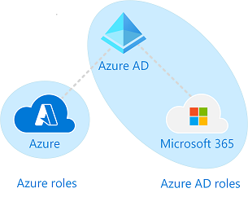

Azure roles, Azure AD roles, and classic subscription administrator roles
How the roles are related
To better understand roles in Azure, it helps to know some of the history. When Azure was initially released, access to resources was managed with just three administrator roles: Account Administrator, Service Administrator, and Co-Administrator. Later, Azure role-based access control (Azure RBAC) was added. Azure RBAC is a newer authorization system that provides fine-grained access management to Azure resources. Azure RBAC includes many built-in roles, can be assigned at different scopes, and allows you to create your own custom roles. To manage resources in Azure AD, such as users, groups, and domains, there are several Azure AD roles.
The following diagram is a high-level view of how the Azure roles, Azure AD roles, and classic subscription administrator roles are related.

]
Azure Roles
Azure RBAC is an authorization system built on Azure Resource Manager that provides fine-grained access management to Azure resources, such as compute and storage. Azure RBAC includes over 70 built-in roles. There are four fundamental Azure roles. The first three apply to all resource types:
| Azure role | Permissions | Notes |
|---|---|---|
|
The Service Administrator and Co-Administrators are assigned the Owner role at the subscription scope Applies to all resource types. |
|
|
Applies to all resource types. |
|
|
Applies to all resource types. |
|
|
The rest of the built-in roles allow management of specific Azure resources. For example, the Virtual Machine Contributor role allows the user to create and manage virtual machines. For a list of all the built-in roles, see Azure built-in roles.
Azure AD Roles
Azure AD roles are used to manage Azure AD resources in a directory such as create or edit users, assign administrative roles to others, reset user passwords, manage user licenses, and manage domains. The following table describes a few of the more important Azure AD roles.
| Azure AD role | Permissions | Notes |
|---|---|---|
|
The person who signs up for the Azure Active Directory tenant becomes a Global Administrator. |
|
|
||
|
In the Azure portal, you can see the list of Azure AD roles on the Roles and administrators page. For a list of all the Azure AD roles, see Administrator role permissions in Azure Active Directory.